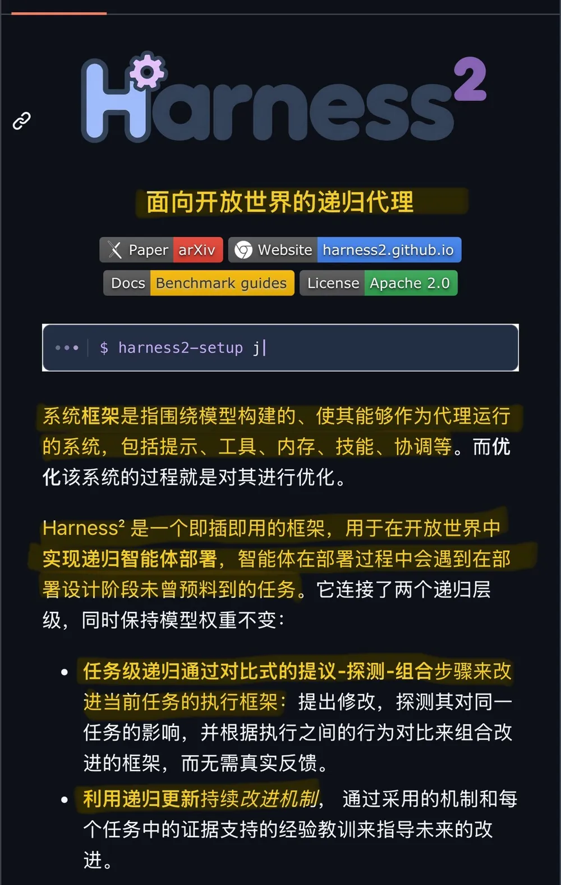
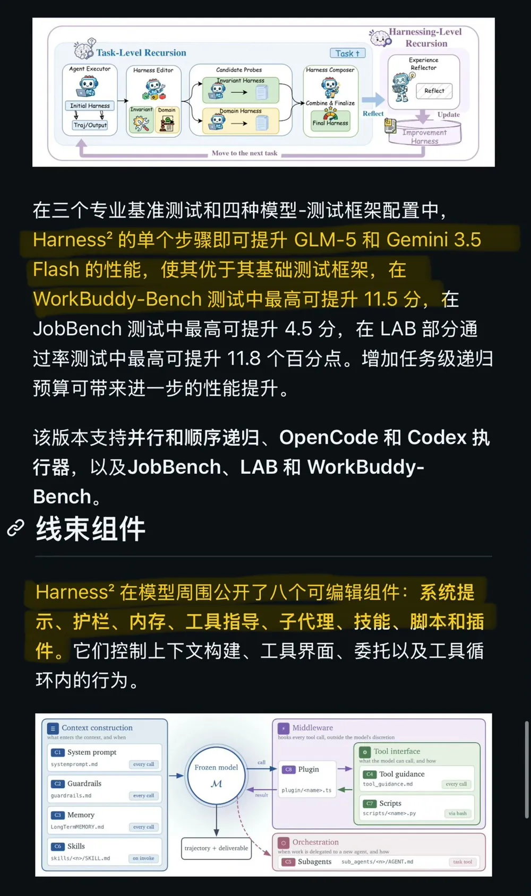
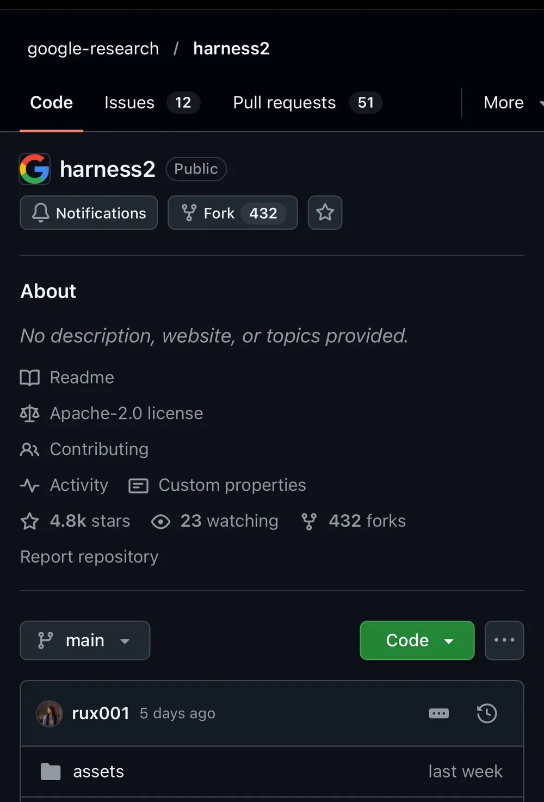
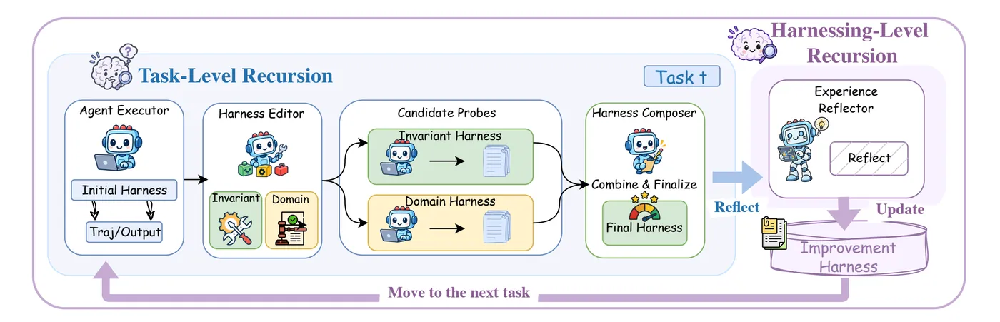
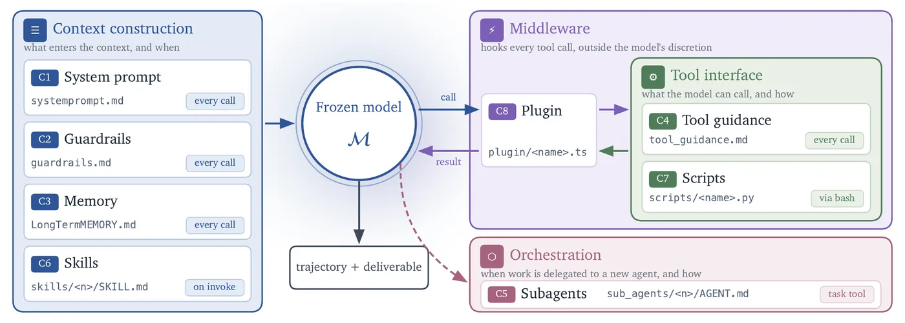

推文全文
😱天呐！模型不动，性能评分却拉升 11.5 分！Google 开源 Harness² 让你的 Agent 进行RSI优化，越改越强！
以前 Agent 一套配置用到死。现在 Google 开源了 Harness²，让 AI 自己优化提示词、工具、记忆和技能，模型权重完全不用动。
两个最狠的点：
1️⃣自己改自己，还不用正确答案 面对新任务，Agent 自动出多个配置版本，跑一遍对比效果，直接合成更强的一套。全程不需要标准答案，也不需要人工打分。
2️⃣越用越强，经验直接带走 做完一个任务，好用的配置和教训会留下来。下一个任务直接站在之前的基础上继续优化，越跑越聪明。
办公、法律等真实任务测试中，一轮就能明显超过原版，多轮后最高涨 11.5 分。
3 步上手：
1️⃣克隆：git clone https://github.com/google-research/harness2.git
2️⃣安装：uv venv --python 3.12 .venv && source .venv/bin/activate && uv pip install -e '.[render]'
3️⃣跑演示：harness2-demo --output runs/demo --k 2
想让自己的 Agent 也能越用越强的，现在就能动手。
仓库：https://github.com/google-research/harness2
#AI #Agent #Google #OpenSource #Harness2 #LLM #AIAgents #WorkBuddy



帖子下面作者只回了一条评论：“对，来个自我进化🧬”，没有补充自回复。
引用的前一条推文（Terminal-RSI）
这条推文引用了作者同一天早些时候（10-18 15:37，UTC+8）的另一条推文，也是作者自己写的中文，照录如下：
🤯RSI突破！腾讯AI混元四步炼出终端Agent神器，Qwen3.8-27B性能直接从51.7%提升至86.5%，小模型硬刚一线！
腾讯混元最新论文Terminal-RSI正式开源递归自我改进（RSI）打法：交替两轮“成功轨迹自重写 + 策略精炼”，让27B模型在终端任务上实现质变。
要点速览：
🔹方法极简却狠：Base → RSR-1（验证成功轨迹Recursive Self-Rewrite做SFT）→ RPR-1（继承critic的RL精炼）→ RSR-2 → RPR-2，两轮闭环，前一轮模型直接生成下一轮训练数据。
🔹成绩炸裂：Terminal-Bench 2.1从51.70%飙到86.52%（+34.82pp）；TB 4.0从0%→19.84%；TB Hard达79%；多基准平均大幅跃升约30个百分点。
🔹长程也破防：Long-Horizon Terminal-Bench process reward 0.21→0.37，严格完成0/46→5/46；SWR100成功率直接翻倍。
🔹技术硬核：验证轨迹重写 + critic权重继承校准 + TB-GAE信用分配 + Success-Prioritized Reward，把“部分进展”真正转化为“严格验证通过”。
🔹意义拉满：延续T1/RSR系列，证明RSI在终端Agent上可稳定爬坡，27B小模型就能冲到86%+水平，逼近甚至超越部分更大模型。
查看论文：https://arxiv.org/abs/2610.22192
这不是概念炒作，是真正把验证过的成功经验反复炼成能力，终端Agent又要卷起来了！
#RSI #递归自我改进 #腾讯混元 #Qwen #TerminalBench #AIAgent #大模型 #TerminalRSI #AgentRL #混元AI
两条放在一起看很有意思：Terminal-RSI 是改权重（SFT + RL 两轮循环），Harness² 是不动权重、只改 harness。两条都叫“RSI”，但改的对象不一样。（论文摘要核对：arXiv:2610.22192 摘要中的 51.70%→86.52%、0/46→5/46、SWR100 3%→6% 与推文一致；作者署名里没有写单位，“腾讯混元”这一点我们没在摘要页上确认。）
导读
一句话：Harness² 把“调 Agent 配置”这件事交给 Agent 自己做，而且是在没有标准答案的新任务上做。
所谓 harness，是包在模型外面、让它能当 Agent 干活的那一圈东西：系统提示词、护栏、记忆、工具说明、子代理、技能、脚本、插件。过去这些基本是人写好后长期不动。Harness² 的做法分两层：
- 任务内（task-level）：先用基础 harness 跑一遍当参照；再分别提出“通用（invariant）”和“领域（domain）”两类修改，各跑一次当探针；最后由“组合器”比较几次执行的行为差异，合成一个更好的 harness，再执行交付。这就是 Propose–Probe–Compose，靠的是行为对比，不是对答案。
- 跨任务（harnessing-level）：每个任务结束后，反思器把采纳的 harness 和“有证据支持的教训”写进一个持续积累的改进 harness（项目站里是 harness 文件 +
EXPERIENCE.md）。下一个任务仍从基础 harness H₀ 开始执行，但“怎么改”的经验会复用。
作者在推文里把这两层概括成“自己改自己，还不用正确答案”和“越用越强，经验直接带走”，基本准确。需要补充的是：论文里 11.5 分是单步就能拿到的“最高”涨幅（WorkBuddy-Bench，某一模型-harness 配置），不是推文说的“多轮后”；另外，要跑真实基准需要 Vertex AI 等模型凭据并会产生 API 费用，只有本地 demo 是免凭据的。

要点
- 模型权重冻结，只改 harness。可编辑的是 8 个组件：系统提示词、护栏、记忆、工具指导、子代理、技能、脚本、插件。
- 无需真值反馈。任务内用 Propose–Probe–Compose，通过对比几次执行的行为来决定保留哪些修改。
- 两种扩展方式。并行（
--mode parallel）一次探 k 个通用 + k 个领域候选，再组合 k 次，“探得更广”；串行（--mode sequential）连续做 k 步，“改得更深”。 - 成绩（论文/README 原话）：单步即让 GLM-5、Gemini 3.5 Flash 超过各自基础 harness，WorkBuddy-Bench 最高 +11.5 分、JobBench 最高 +4.5 分、LAB 部分通过率最高 +11.8 个百分点；加大任务级递归预算还会继续涨。
- 支持：OpenCode（默认）与 Codex 两种执行器；JobBench（职业工作）、LAB（法律）、WorkBuddy-Bench（办公/网页/代码）三个基准。
- 上手：Linux + Python 3.12 + uv，
harness2-demo --output runs/demo --k 2是确定性编辑器 + 真实 Python 执行的本地演示，不需要模型凭据。
我们核实到的情况
“Google 开源”：基本成立。仓库在 google-research 组织下，pyproject.toml 作者写 “Google LLC”，许可 Apache-2.0。但 README 末尾声明 “This is not an officially supported Google product”。论文一作 Ruiyao Xu 来自 Northwestern University，其余作者来自 Google Cloud AI Research（据 项目站）。
“性能评分拉升 11.5 分”：数字对得上，但有条件：是 WorkBuddy-Bench 上、某一模型-harness 配置下的最高涨幅，而且是单步（arXiv:2610.14224 摘要：“a single step consistently improves … yielding gains of up to 11.5 points on WorkBuddy-Bench”）。推文“多轮后最高涨 11.5 分”的说法与原文不符。项目站展示的 Gemini 3.5 Flash / OpenCode 在 k=5 时三个子域分别 +7.4（代码）、+8.4（网页）、+9.4（办公）。
“不需要标准答案，也不需要人工打分”：前半句是论文的核心卖点（“without ground-truth verifiers”）。后半句 README 没有直接写，但流程里的编辑、组合、反思都由模型完成，确实不需要人工逐条打分；评测阶段仍有 harness2-judge 按基准评分标准打分。
“办公、法律等真实任务”：成立，对应 WorkBuddy-Bench 的 office 子集和 LAB（法律）。注意它们仍是基准任务，不是线上生产。
三步上手命令：与 README 的 Install 一节一致；harness2-demo 在 pyproject.toml 中注册为命令行入口。我们没有实际运行 demo。
安全提示（README 原文要点）：执行器网络访问不受限，Codex 运行时关闭沙箱；公开基准的评分标准可能在网上搜得到，评测前需要自己限制网络。推文没提这一点。
配图里的 star/fork 数（约 4.8k / 432）来自作者截图，我们没有独立核对。
README 中文全译
译自 google-research/harness2 的 README.md（2026-10-19 抓取），原文 © Google LLC，Apache License 2.0。徽章、动图和视频未转载；链接指向原仓库。
Harness²：面向开放世界的递归 Agent Harness 优化
链接：论文（arXiv） · 项目网站 · 基准指南 · 许可：Apache 2.0
Harness 是包在模型外面、使模型能够作为 Agent 行动的系统：提示词、工具、记忆、技能、编排等等。Harnessing 就是优化这个系统的过程。
Harness² 是一个即插即用的框架，用于在开放世界中进行递归 Agent harness 优化：在开放世界里，Agent 会遇到 harness 设计阶段从未见过的任务。它在保持模型权重不变的前提下，连接了两个层级的递归：
- 任务级递归通过对比式的 Propose–Probe–Compose（提议–探测–组合）步骤改进当前任务的执行 harness：提出修改，在同一任务上探测这些修改的效果，再根据多次执行之间的行为对比组合出改进后的 harness，全程不需要真值反馈。
- Harness 级递归用每个任务中被采纳的 harness 和有证据支持的经验教训，更新一个持久的改进 harness，用来指导之后的改进。
在三个专业基准、四种模型–harness 配置上，单步 Harness² 就让 GLM-5 和 Gemini 3.5 Flash 超过了它们的基础 harness：WorkBuddy-Bench 最高提升 11.5 分，JobBench 最高提升 4.5 分，LAB 部分通过率最高提升 11.8 个百分点。增加任务级递归预算还能带来进一步的提升。
本次发布支持并行与串行递归、OpenCode 与 Codex 执行器，以及 JobBench、LAB 和 WorkBuddy-Bench。
视频概览
见原仓库 README 内嵌视频（本页不转载视频）。
Harness 组件
Harness² 在模型周围开放了八个可编辑组件：系统提示词、护栏、记忆、工具指导、子代理、技能、脚本和插件。它们控制上下文的构建、工具接口、任务委派，以及工具循环内部的行为。

安装
请使用 Linux、Python 3.12 和 uv。在仓库根目录执行：
uv venv --python 3.12 .venv
source .venv/bin/activate
uv pip install -e '.[render]'
harness2-demo --output runs/demo --k 2本地演示会用确定性的编辑器和真实的 Python 执行跑完两种递归模式，不需要任何模型凭据。
要跑基于模型的基准，需要安装 Node.js 20+、Google Cloud CLI 以及基准依赖。LAB 需要 Pandoc 和 Poppler；WorkBuddy-Bench 需要 Docker。然后配置模型：
cp .env.example .env
# 编辑 .env，填入你的 Vertex AI 项目和模型 ID。
gcloud auth application-default login模型设置、其他认证方式以及 Codex 执行器，见安装指南。
运行一个基准
下面的例子会安装 LAB 并运行一个任务，然后评测并报告结果。基于模型的运行会产生 API 费用，请先从少量任务开始。
harness2-setup lab
harness2-check --bench lab
harness2 --bench lab --k 1 --mode parallel \
--only-domains antitrust-competition --max-tasks 1
harness2-judge --bench lab --k 1 --mode parallel
harness2-report --bench lab --k 1 --mode parallel串行递归用同样的命令，改成 --mode sequential。--k 是任务级递归预算，见“实验”一节。评测和报告必须使用与优化运行相同的基准、执行器、子集、--k、--mode 和随机种子。给 harness2 加上 --dry-run 可以只预览任务选择，不调用模型。
| 基准 | 任务 | 安装 | 指南 |
|---|---|---|---|
| JobBench | 职业工作 | harness2-setup jb | JobBench |
| LAB | 法律工作 | harness2-setup lab | LAB |
| WorkBuddy-Bench | 办公、网页与代码 | harness2-setup wb | WorkBuddy |
每条命令选一个基准。WorkBuddy 在安装之后的每条命令上还可以加 --subset office、--subset web 或 --subset code。基准指南介绍了每个基准的数据、领域和评分方式。
实验
任务级递归有两种扩展方式：并行递归探索多个候选 harness，并根据它们的执行证据组合出改进；串行递归让改进后的 harness 和累积的证据经过连续多次 Propose–Probe–Compose 步骤。
（原文配图：两种扩展方式。并行：探测 k 个通用候选和 k 个领域候选 harness，再根据共享证据产出 k 个组合；串行：让改进后的 harness 和累积证据经过 k 次 Propose–Probe–Compose 步骤。并行探得更广，串行改得更深。）
| 选项 | 行为 |
|---|---|
--k 1 | 一次 Propose–Probe–Compose 步骤 |
--k K --mode parallel | 探测 K 个通用候选和 K 个领域候选，然后产出 K 个组合 |
--k K --mode sequential | 通过 K 个连续步骤改进 harness |
--substrate cx | 用 Codex 代替默认的 OpenCode 执行器 |
每个任务结束后，harness 级递归会保留被采纳的 harness 和有证据支持的经验教训，用来指导之后的改进。任务选择、并发、可复现性和基线对比见实验指南。
网络访问
执行器的网络访问不受限制，Codex 运行时其沙箱处于关闭状态。公开基准的评分标准可能在网上能查到。评测前，请配置网络限制，防止访问基准答案和评分标准。
结果与续跑
结果保存在 runs/ 下，按基准（以及适用时按子集）组织，包括任务摘要、交付物、被采纳的 harness、反思笔记和评测结果。
重复同一条命令即可续跑。更换模型或任务选择时，请使用新的 HARNESS2_RUNS_DIR。详见结果与续跑；每条命令也都支持 --help。
引用
@article{xu2026harness2,
title = {Harness$^2$: Recursive Agent Harnessing for an Open World},
author = {Xu, Ruiyao and Chen, Yanfei and CuiZhu, Zhongying and Dalvi Mishra, Bhavana and Ming, Yifei and Yu, Han and Han, Rujun and Lee, Chen-Yu and Pfister, Tomas},
journal = {arXiv preprint arXiv:2610.14224},
year = {2026},
url = {https://arxiv.org/abs/2610.14224}
}贡献
许可
Harness² 采用 Apache 2.0 许可。third_party/ 下的第三方代码、各基准和数据集保留其上游许可，见第三方声明。
免责声明
这不是 Google 官方支持的产品。本项目不适用于 Google 开源软件漏洞奖励计划。
对我们的启发
- 先改 harness，再考虑改模型。同一个模型，换一套提示词/技能/护栏就能涨 5–11 分。这和 面向自我改进的 Harness 工程 的判断一致：Agent 能力 = 模型 + harness，后者便宜得多、迭代快得多。
- 没有标准答案时，用“对比执行”代替“对答案”。同一任务跑基础版和两个候选版，看行为差异再取舍。我们做评审和改提示词时也能这么做，思路接近 Claude Code 团队的代码评审 里的“先自证、多方对照”。
- 把经验写成文件。改进 harness 本质上是一份不断追加的
EXPERIENCE.md加上被采纳的 harness 文件，和我们 wiki 的“raw 不改、pages 累积、hot 做路由”是同一种结构，也和 Jev 工程里“外置大脑”的做法相通。 - 区分两种 RSI。Harness² 改 harness，Terminal-RSI 改权重，GLM 构建推理基础设施则是让模型参与造工具链。读到“RSI”标题时，先问一句“它到底改了什么”。
- 标题里的数字要回原文核对。“+11.5 分”是单步、最高、特定配置；“Google 开源”同时写着“非官方支持产品”。转述时把条件带上。
- 评测要隔离网络。README 明确提醒执行器不受限、Codex 关沙箱、评分标准可能在网上。自己搭自我改进回路时，同样要防止 Agent 去“搜答案”。